Prep-à-Porter
Prototipo di applicazione mobile

Il Progetto
Quest'interfaccia è stata realizzata per l'esame di ergonomia cognitiva. Il brief prevedeva di progettare un'applicazione che risolvesse un problema degli studenti. Il nostro obiettivo è stato quello di costruire un'app che potesse aiutare studenti e giovani lavoratori con la gestione dei pasti d'asporto, evitando quindi disorganizzazione che porta a sprechi e perdite di tempo.
Il mio contributo
In questo progetto il mio contributo è stato utile in diverse fasi del lavoro. Inizialmente ho contribuito alla realizzazione di interviste utili alla comprensione dei reali bisogni del target, successivamente ho progettato l'applicazione su Figma partendo da wireframe low-fidelity fino ad arrivare ai mockup. Successivamente, ho realizzato una serie di user test utili poi al redesign dell'applicazione sulla base dei problemi riscontrati.
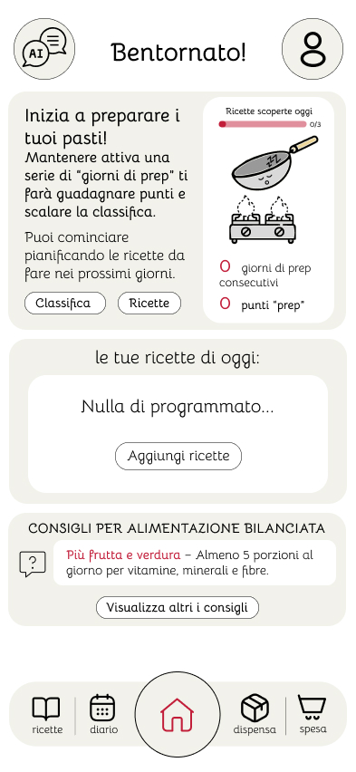
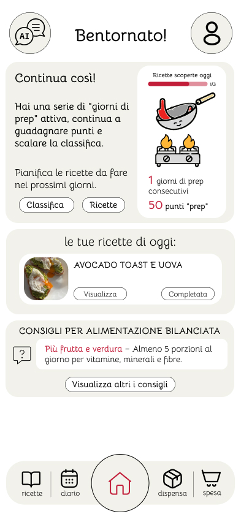
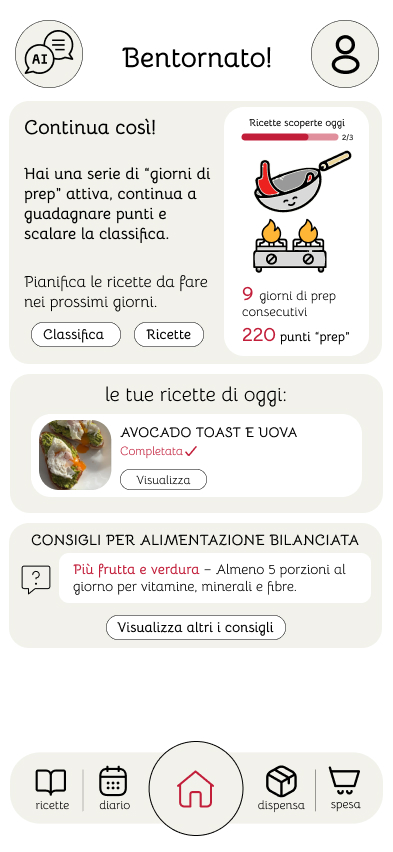
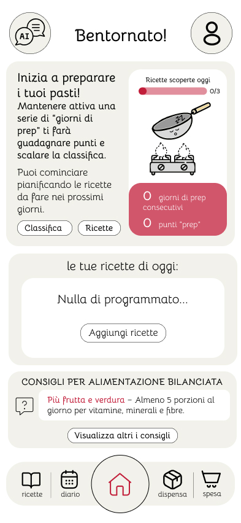
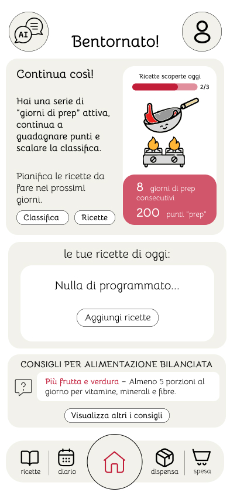
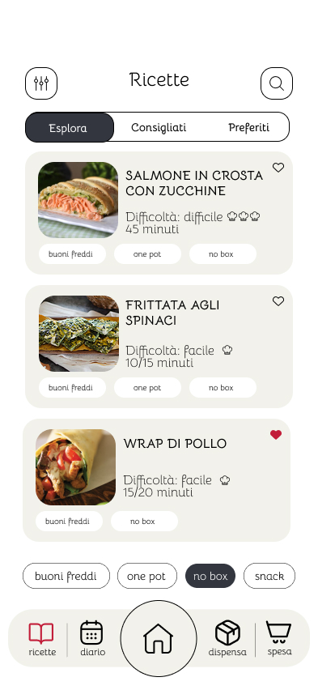
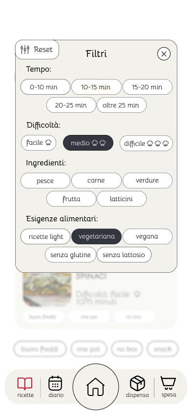
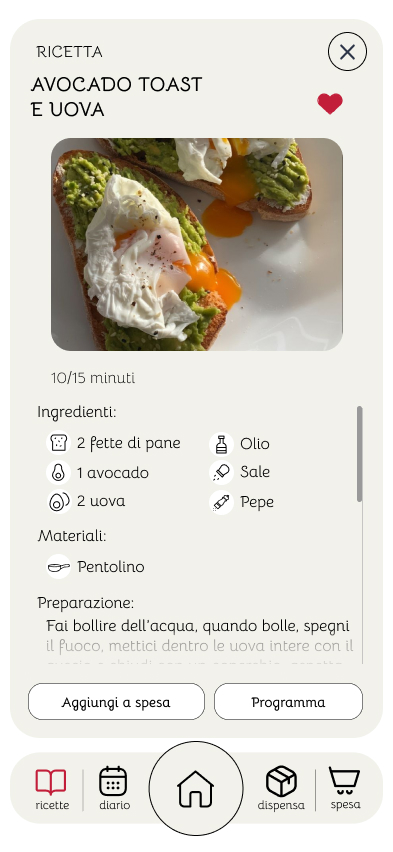
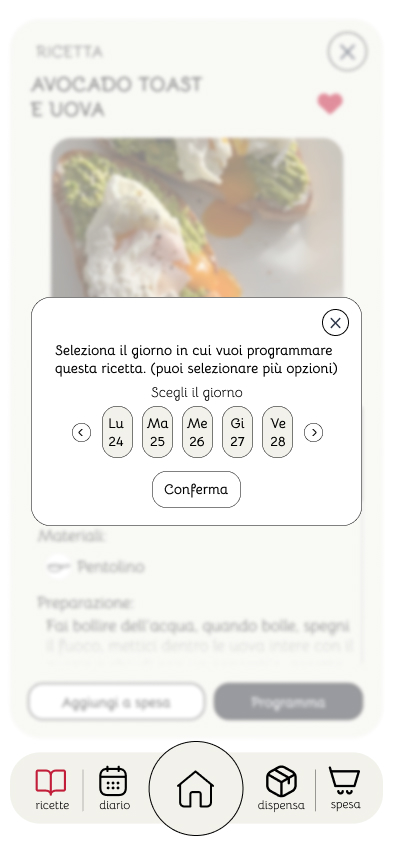
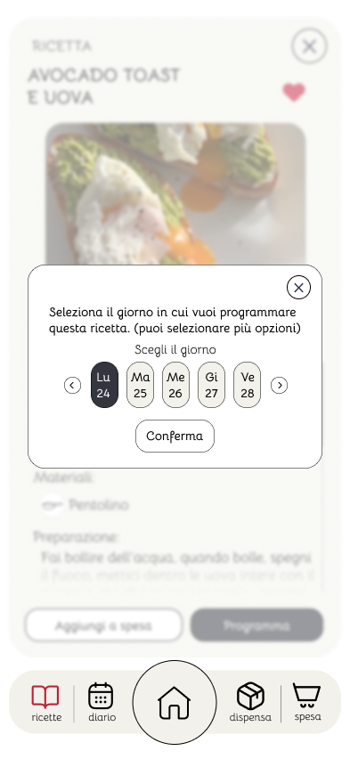
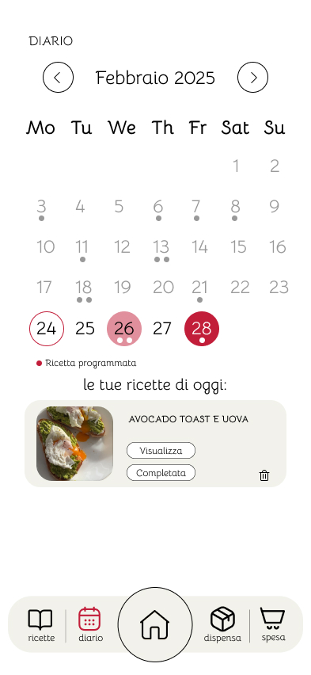
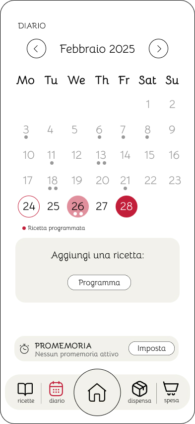
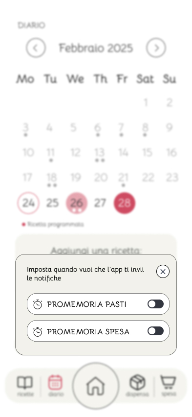
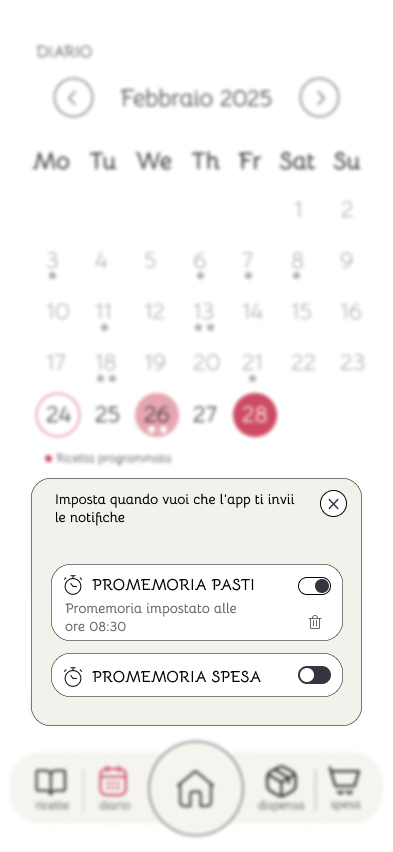
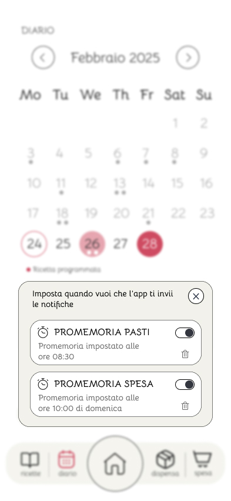
Approfondimenti UX/UI
Vi presento una seconda versione dell'applicazione, scartata nelle prime fasi di prototipazione in quanto non utilizzabile durante la fase di test. In questo caso, la fase di testing del prototipo è stata svolta stampando su carta le varie schermate e i colori di questa versione del prototipo non ci garantivano la corretta visualizzazione della stampa, per cui, per rispettare le norme WCAG, si è deciso di utilizzare i colori e il design presente nella versione del prototipo definitiva, presentata all'inizio.
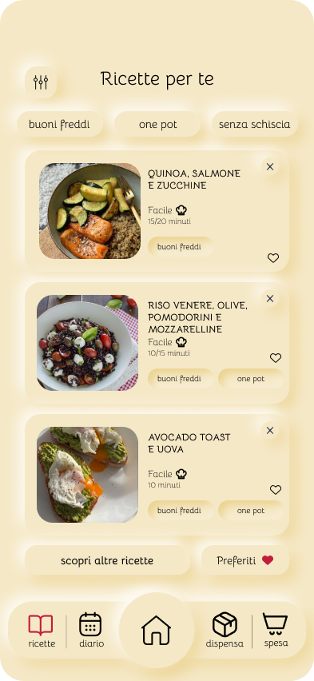
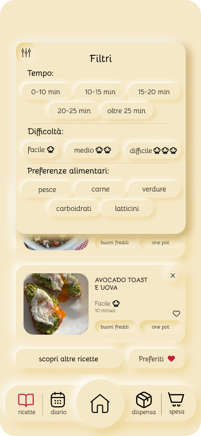
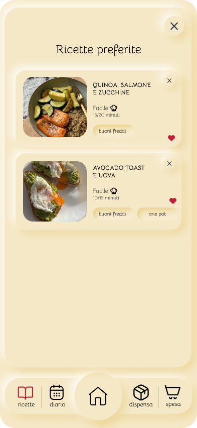
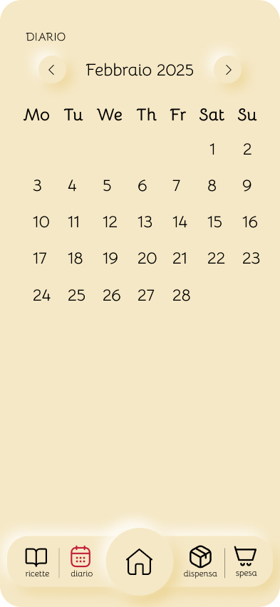
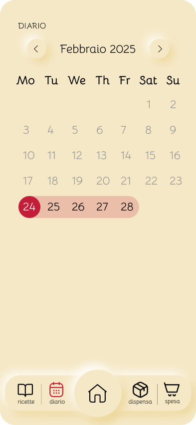
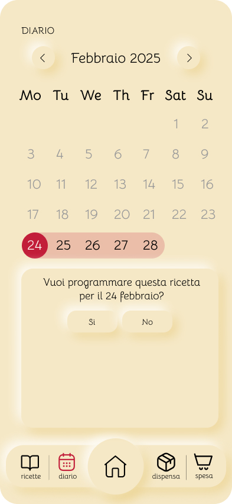
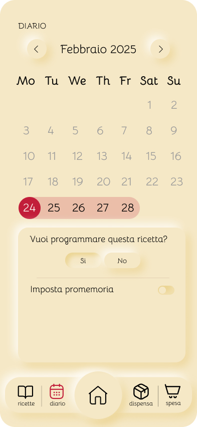
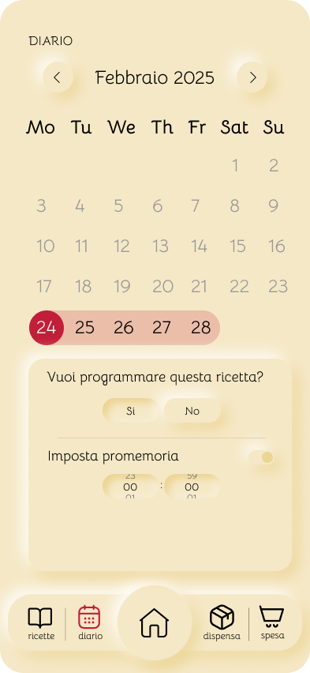
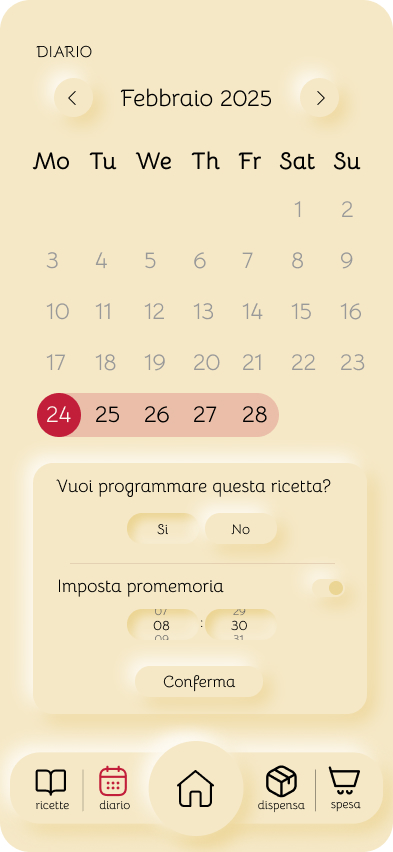